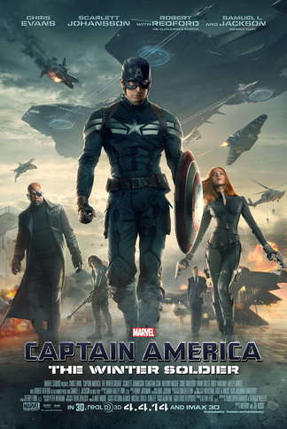
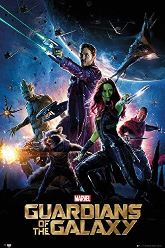
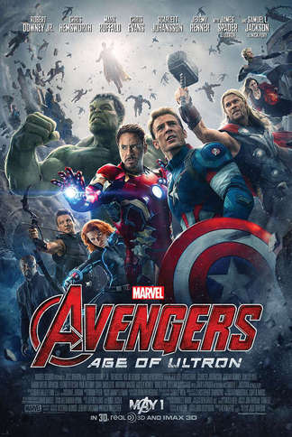
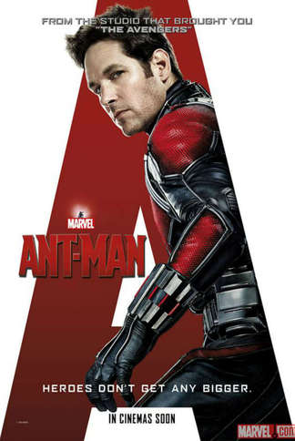

Iron Man (2008)
Iron Man is a 2008 American superhero film based on the Marvel Comics character of the same name. Produced by Marvel Studios and distributed by Paramount Pictures, it is the first film in the Marvel Cinematic Universe. The film was directed by Jon Favreau from a screenplay by Mark Fergus and Hawk Ostby, and Art Marcum and Matt Holloway, and stars Robert Downey Jr. as Tony Stark / Iron Man, alongside Terrence Howard, Jeff Bridges, Shaun Toub, and Gwyneth Paltrow. In Iron Man, Tony Stark is an industrialist and master engineer who builds a mechanized suit of armor and becomes the superhero Iron Man.
The Incredible Hulk (2008)
The Incredible Hulk is a 2008 American superhero film based on the Marvel Comics character the Hulk, produced by Marvel Studios and distributed by Universal Pictures. It is the second film in the Marvel Cinematic Universe (MCU). The film was directed by Louis Leterrier, with a screenplay by Zak Penn. It stars Edward Norton as Bruce Banner, alongside Liv Tyler, Tim Roth, Tim Blake Nelson, Ty Burrell, and William Hurt. In The Incredible Hulk, Bruce Banner becomes the Hulk as an unwitting pawn in a military scheme to reinvigorate the "Super-Soldier" program through gamma radiation. On the run, he attempts to cure himself of the Hulk before he is captured by General Thaddeus Ross, but his worst fears are realized when power-hungry soldier Emil Blonsky becomes a similar, but more bestial creature.

Ironman 2 (2010)
Iron Man 2 is a 2010 American superhero film based on the Marvel Comics character Iron Man, produced by Marvel Studios and distributed by Paramount Pictures. It is the sequel to 2008's Iron Man, and the third film in the Marvel Cinematic Universe (MCU). Directed by Jon Favreau and written by Justin Theroux, the film stars Robert Downey Jr. as Tony Stark / Iron Man, alongside Gwyneth Paltrow, Don Cheadle, Scarlett Johansson, Sam Rockwell, Mickey Rourke, and Samuel L. Jackson. Six months after the events of Iron Man, Tony Stark is resisting calls by the United States government to hand over the Iron Man technology while also combating his declining health from the arc reactor in his chest. Meanwhile, rogue Russian scientist Ivan Vanko has developed the same technology and built weapons of his own in order to pursue a vendetta against the Stark family, in the process, joining forces with Stark's business rival, Justin Hammer.

Thor (2011)
Thor is a 2011 American superhero film based on the Marvel Comics character of the same name. Produced by Marvel Studios and distributed by Paramount Pictures, it is the fourth film in the Marvel Cinematic Universe (MCU). The film was directed by Kenneth Branagh, written by the writing team of Ashley Edward Miller and Zack Stentz along with Don Payne, and stars Chris Hemsworth as the title character, alongside Natalie Portman, Tom Hiddleston, Stellan Skarsgård, Colm Feore, Ray Stevenson, Idris Elba, Kat Dennings, Rene Russo, and Anthony Hopkins. The film sees Thor banished to Earth from Asgard, stripped of his powers and his hammer Mjölnir, after reigniting a dormant war. As his brother Loki plots to take the Asgardian throne, Thor must prove himself worthy.

Captain America: The First Avenger (2011)
Captain America: The First Avenger is a 2011 American superhero film based on the Marvel Comics character Captain America. Produced by Marvel Studios and distributed by Paramount Pictures, it is the fifth film in the Marvel Cinematic Universe (MCU). The film was directed by Joe Johnston, written by Christopher Markus and Stephen McFeely, and stars Chris Evans as Steve Rogers / Captain America, alongside Tommy Lee Jones, Hugo Weaving, Hayley Atwell, Sebastian Stan, Dominic Cooper, Neal McDonough, Derek Luke, and Stanley Tucci. Set predominantly during World War II, the film tells the story of Steve Rogers, a sickly man from Brooklyn who is transformed into the super-soldier Captain America and must stop the Red Skull, who intends to use an artifact called the "Tesseract" as an energy-source for world domination.

The Avengers (2012)
Marvel's The Avengers (classified under the name Marvel Avengers Assemble in the United Kingdom and Ireland), or simply The Avengers, is a 2012 American superhero film based on the Marvel Comics superhero team of the same name, produced by Marvel Studios and distributed by Walt Disney Studios Motion Pictures. It is the sixth film in the Marvel Cinematic Universe (MCU). The film was written and directed by Joss Whedon and features an ensemble cast that includes Robert Downey Jr., Chris Evans, Mark Ruffalo, Chris Hemsworth, Scarlett Johansson, and Jeremy Renner as the titular Avengers team, alongside Tom Hiddleston, Clark Gregg, Cobie Smulders, Stellan Skarsgård, and Samuel L. Jackson. In the film, Nick Fury, director of the spy agency S.H.I.E.L.D., recruits Tony Stark, Steve Rogers, Bruce Banner, and Thor to form a team that must stop Thor's brother Loki from subjugating Earth.

The Second Phase
Ironman 3 (2013)
Iron Man 3 is a 2013 American superhero film based on the Marvel Comics character Iron Man, produced by Marvel Studios and distributed by Walt Disney Studios Motion Pictures.[N 1] It is the sequel to Iron Man (2008) and Iron Man 2 (2010), and the seventh film in the Marvel Cinematic Universe (MCU). The film was directed by Shane Black from a screenplay he co-wrote with Drew Pearce, and stars Robert Downey Jr. as Tony Stark / Iron Man alongside Gwyneth Paltrow, Don Cheadle, Guy Pearce, Rebecca Hall, Stéphanie Szostak, James Badge Dale, Jon Favreau, and Ben Kingsley. In Iron Man 3, Tony Stark wrestles with the ramifications of the events of The Avengers during a national terrorism campaign on the United States led by the mysterious Mandarin.

Thor:The Dark World (2013)
Thor: The Dark World is a 2013 American superhero film based on the Marvel Comics character Thor, produced by Marvel Studios and distributed by Walt Disney Studios Motion Pictures. It is the sequel to Thor (2011) and the eighth film in the Marvel Cinematic Universe (MCU). The film was directed by Alan Taylor from a screenplay by Christopher Yost and the writing team of Christopher Markus and Stephen McFeely. It stars Chris Hemsworth as Thor alongside Natalie Portman, Tom Hiddleston, Anthony Hopkins, Stellan Skarsgård, Idris Elba, Christopher Eccleston, Adewale Akinnuoye-Agbaje, Kat Dennings, Ray Stevenson, Zachary Levi, Tadanobu Asano, Jaimie Alexander, and Rene Russo. In the film, Thor and Loki team up to save the Nine Realms from the Dark Elves.

Captain America:The Winter Soilder (2014)
Captain America: The Winter Soldier is a 2014 American superhero film based on the Marvel Comics character Captain America, produced by Marvel Studios and distributed by Walt Disney Studios Motion Pictures. It is the sequel to Captain America: The First Avenger (2011) and the ninth film in the Marvel Cinematic Universe (MCU). The film was directed by Anthony and Joe Russo from a screenplay by the writing team of Christopher Markus and Stephen McFeely. It stars Chris Evans as Steve Rogers / Captain America alongside Scarlett Johansson, Sebastian Stan, Anthony Mackie, Cobie Smulders, Frank Grillo, Emily VanCamp, Hayley Atwell, Robert Redford, and Samuel L. Jackson. In the film, Captain America joins forces with Black Widow and Falcon to uncover a conspiracy within the spy agency S.H.I.E.L.D. while facing a mysterious assassin known as the Winter Soldier.

Guardians Of The Galaxy (2014)
Guardians of the Galaxy (retroactively referred to as Guardians of the Galaxy Vol. 1[4][5]) is a 2014 American superhero film based on the Marvel Comics superhero team of the same name. Produced by Marvel Studios and distributed by Walt Disney Studios Motion Pictures, it is the 10th film in the Marvel Cinematic Universe (MCU). The film was directed by James Gunn, who wrote the screenplay with Nicole Perlman, and features an ensemble cast including Chris Pratt, Zoe Saldana, Dave Bautista, Vin Diesel, and Bradley Cooper as the titular Guardians, along with Lee Pace, Michael Rooker, Karen Gillan, Djimon Hounsou, John C. Reilly, Glenn Close, and Benicio del Toro. In the film, Peter Quill and a group of extraterrestrial criminals go on the run after stealing a powerful artifact.

Avengers:Age of Ultron
Avengers: Age of Ultron is a 2015 American superhero film based on the Marvel Comics superhero team the Avengers, produced by Marvel Studios and distributed by Walt Disney Studios Motion Pictures. It is the sequel to The Avengers (2012) and the 11th film in the Marvel Cinematic Universe (MCU). The film was written and directed by Joss Whedon and features an ensemble cast that includes Robert Downey Jr., Chris Hemsworth, Mark Ruffalo, Chris Evans, Scarlett Johansson, Jeremy Renner, Don Cheadle, Aaron Taylor-Johnson, Elizabeth Olsen, Paul Bettany, Cobie Smulders, Anthony Mackie, Hayley Atwell, Idris Elba, Stellan Skarsgård, James Spader, and Samuel L. Jackson. In the film, the Avengers fight Ultron, an artificial intelligence obsessed with causing human extinction.

Antman (2015)
Ant-Man is a 2015 American superhero film based on the Marvel Comics characters of the same name: Scott Lang and Hank Pym. Produced by Marvel Studios and distributed by Walt Disney Studios Motion Pictures, it is the 12th film in the Marvel Cinematic Universe (MCU). The film was directed by Peyton Reed from a screenplay by the writing teams of Edgar Wright and Joe Cornish, and Adam McKay and Paul Rudd. It stars Rudd as Scott Lang / Ant-Man alongside Evangeline Lilly, Corey Stoll, Bobby Cannavale, Michael Peña, Tip "T.I." Harris, Anthony Mackie, Wood Harris, Judy Greer, David Dastmalchian, and Michael Douglas as Hank Pym. In the film, Lang must help defend Pym's Ant-Man shrinking technology and plot a heist with worldwide ramifications.
